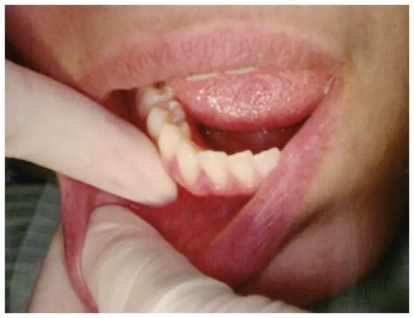
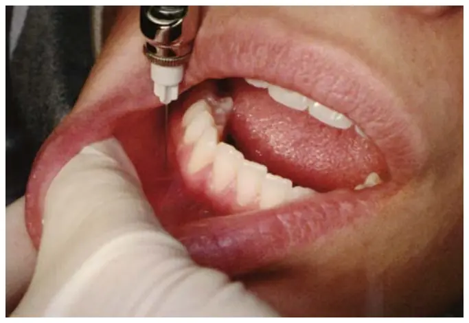

نسخه استخراجشده؛ ترجمه یا تأیید علمی انجام نشده است. وضعیت: captured
پسر جوانی با زمین خوردن، پارگی یکسانتیمتری در مخاط داخل لب پایین سمت راست دارد و باید بخیه شود. دندانها سالماند. آیا برای این کار به بلاک عصب آلوئولار تحتانی (IANB) نیاز داری؟

عصب منتال یکی از دو شاخهی انتهایی عصب آلوئولار تحتانی است. از سوراخ منتال بیرون میآید و فقط بافت نرم را حس میدهد:
این بلاک پالپ هیچ دندانی را بیحس نمیکند. کاربردش کار روی بافت نرم قدامی است، مثل بیوپسی و بخیه. کمکاربردترین بلاک فک پایین است، ولی موفقیتش نزدیک ۱۰۰٪ است، چون عصب زیر مخاط است و در استخوان پنهان نیست.
معمولاً زیر پرمولر دوم و نزدیک اپکس آن، در نیمهی راه لبهی بالا و پایین تنهی مندیبل است؛ ولی ممکن است جلوتر یا عقبتر باشد.
ناحیهی منتال از نظر آناتومی ایمن است و عارضهی جدی کمی دارد. برخورد سوزن با پریوست دردناک است؛ یا به آن نخور یا پیش از تماس چند قطره بریز. اگر سوزن به عصب منتال بخورد، بیمار «شوک الکتریکی» حس میکند و بهندرت پارستزی لب یا چانه میماند. هماتوم را با دستکم ۲ دقیقه فشار گاز کنترل کن.
